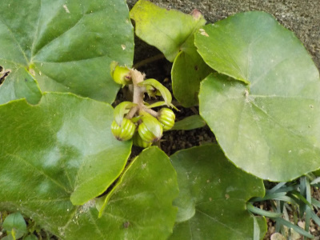
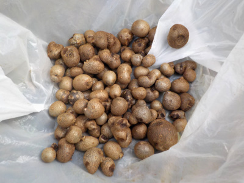
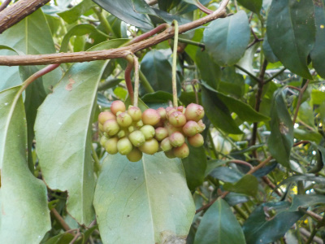
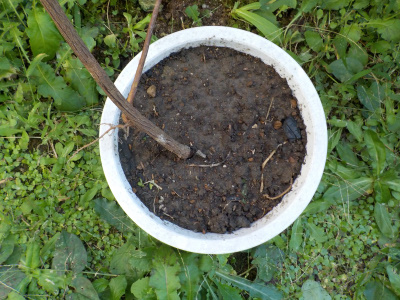
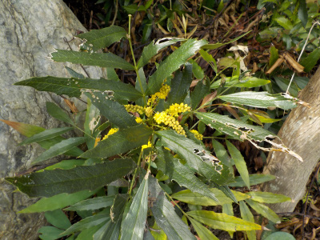
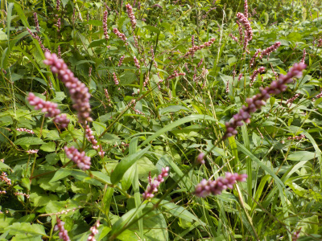
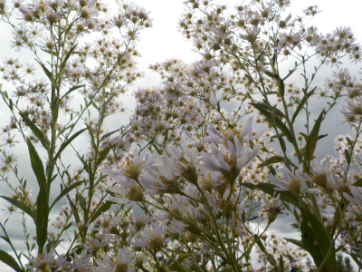
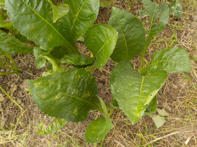
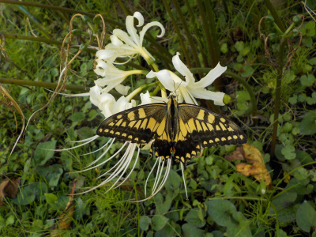

遊びで植物を育てよう
2023/10/15
ツワブキの小さいのにツボミがありました。

葉っぱがキレイだなと思い抜かずにいたらツボミを付けていました。
この草丈をキープ出来たら抜かずに置いておけるんだけどな。
【10月TOP】
【日記TOP】
【園芸TOP】
2023/10/15
年に１回くらいはムカゴを食べようかな。

いつも9月くらいに収穫するんですが、忘れていました。
大きいのは落ちたみたいで小粒が多いです。
塩ゆでして食べようと思います。
【10月TOP】
【日記TOP】
【園芸TOP】
2023/10/15
シキミの木に巻き付いてたサカネカズラ。

シキミにツルが巻き付いていたので取りました。
検索したらサカネカズラで、赤い実が鑑賞になるそうです。

赤い実を見たかったなー。
来年見れるかもと思い、サカネカズラの根っこ部分を鉢に植えました。枯れないといいです。
【10月TOP】
【日記TOP】
【園芸TOP】
2023/10/09
刈り取ったはずのホソバヒイラギナンテンが復活していました。

スズメバチが飛んでいるのが気になって見たら、ホソバヒイラギナンテンの花がありました。
スズメバチが集まって危ないので切ったんですけど、再生したみたいです。
【10月TOP】
【日記TOP】
【園芸TOP】
2023/10/09
イヌダテがあちこちで沢山生えています。

雑草ですが、まとまって生えてるとキレイですね。草丈が低くて邪魔にならないので、放置しようと思っています。
【10月TOP】
【日記TOP】
【園芸TOP】
2023/10/09
シオンが増えてました。

シオンは背が高くて花が多いので見栄えがいいですが、曇り空だといまいちですね。

株元には小さいのが出来ていました。ここで育ったら密になりますね。
後、連作障害になると思ったら違う場所に植え替えた方がいいんだろうな。
【10月TOP】
【日記TOP】
【園芸TOP】
2023/10/01
疲れた感じのアゲハ蝶が彼岸花にとまっていました。

近づいても何の反応もしないので、多分体力の限界でしょう。
秋ですね。
【10月TOP】
【日記TOP】
【園芸TOP】
過去の日記
【2022年10月の日記】
【2021年10月の日記】
【2020年10月の日記】
【2019年10月の日記】
【2018年10月の日記】
【2017年10月の日記】
【2016年10月の日記】
【2015年10月の日記】
【2014年10月の日記】
【2013年10月の日記】
【2012年10月の日記】
【10月TOP】
【日記TOP】
【園芸TOP】
畑仕事じゃないよ。
【おいしいものを食べよう。】【たくさん寝よう。】
【ソロ活をしよう!】【季節感のあることをしよう。】【動画視聴はほどほどに。】【当サイトの全てのコンテンツは無断転載禁止です。】